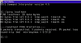
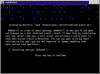

In this section, you will install a set of components that make up WebMail/2. It assumes that your e-mail and web servers are already installed and configured. If you do not have these servers installed already, then you may continue with installation of WebMail/2 but you will not be able to use WebMail/2 untill your web and email servers are working.
There are several steps you must perform, and these steps vary based on your configruation, particularly whether you are using one or more servers and if you are going to use automatic or manual installation. The following instructions are for a single-server installation. Following this will be notes regarding changes that would need to be made for a multi-server configuration. These instructions are not step-by-step. It is assumed that if you have a multi-server configuration you are savvy enough to apply the provided information toward your unique configuration.
 Before we begin the installation of WebMail/2, we need to make sure that your computer's loopback interface is configured. This is a special interface that allows programs running on the same machine to easily talk to each other. From an OS/2 command prompt, type:
PING 127.0.0.1 32 5
40 bytes from 127.0.0.1: icmp_seq=0. time=0. ms
ifconfig lo 127.0.0.1
Save and exit. You can then either reboot your computer or re-type the ifconfig line directly within an OS/2 command prompt. Retest with the above PING statement and make sure that you now get the proper response.
 Automatic installation of WebMail/2. Unzip the WebMail/2 distribution archive and execute the installation script, install.cmd.
The installation script will ask a few questions about your system. The installation will also create an install.log file in your WebManager directory which containts the answers to those questions, so in case of an upgrade the installation will use them instead of asking you the same questions again.
The installation script can be used for both single and multiple server systems. In case of a multiple server system or a system where the web server is not on the same machine as the WebManager, you are required to install some parts of WebMail/2 manually.
Manual installation of WebMail/2. In case the automatic installation fails, or you would like to do things by hand for higher flexibility, then follow these instructions. These instructions assume that you will be installing WebMail/2 to "C:\TCPIP\WebMail2". If you wish to install it to a different location, just substitue whatever path you want when you see the default location.
Unzip the WebMail/2 archive into C:\TCPIP\WebMail2. You will find several zip files. Bellow you will find the instructions how to install each zip file.
Unzip CGI.zip into your web servers' CGI-BIN directory. You'll get two files, the webmail2.cmd, which is the CGI script, and the rexx2exe.exe. At this point you have the choice to either use the script as it is, or compress it with rexx2exe to create a binary exe file. If you choose to compress the CGI script, you should do any modifications right now. Some people prefer the compressed exe form because it may be faster to execute in some cases. Others prefer the script form which allows you to manually edit the script in the future and customise it to your own needs.
In any case, you should delete rexx2exe from the CGI-BIN directory once you've decided if you are going to compress the CGI file or not.
You have two options now, to configure the script you may either set environment variables, or edit the script yourself to enter the proper settings, if you haven't used rexx2exe to compress it. It may be better to set environment variables in the long run, because it is easy to do upgrades in the future, although you are required to reboot the server machine.
For detailed information on how to setup the CGI script please read Chapter 4.1 - CGI Settings
Create the directory "\webmailhtml" under "C:\TCPIP\WebMail2". Unzip WebMailHTML.zip into this directory. This will extract a series of .WM files that will be accessed by the CGI script. This directory must be accessible from the CGI script.
These .WM files are actually HTML files. You may edit them to your own needs. Keep in mind that some of them are incomplete on their own, and they are used to create a complete HTML file at runtime.
Create the directory "\webmailimages" under your web server's HTML directory and unzip WebMailImages.zip into this directory.
The .WM files from webmailhtml.zip use these image files. The path is hard-coded within these files as "/webmailimages". If you wish to change this path you will need to modify the .wm files manually to reflect this.
Alternatively, you can create an alias of /webmailimages/ and make it point to a different physical directory that suits your needs. This is beyond the scope of this document, however. See your web server's documentation regarding aliases.
Under "C:\TCPIP\WebMail2", create a directory called "\DLL". In it, extract DLL.zip. This will extract five files.
dcdll.dll, dcplus.dll, rxdcplus.dll: Required by the CGI script. These files are required for all installations.
HRxPass.dll: Required if you use the Inet.Mail email server for OS/2. It should exist at the same machine as your Inet.Mail installation.
HRxPassPro.dll: Required if you se Inet.Mail Pro email server for OS/2. It should exist in the same machine as your Inet.Mail Pro installation. Rename it to HRxPass.dll first before using it. This file has been renamed so as not to conflict with the above dll for Inet.Mail non-pro version.
ipsrexx.dll: Required if you use the InetPowerServer email server for OS/2. It should exist at the same machine as your IPS installation.
You may delete any DLLs that are not required by your configuration. Once the files are extracted, you may copy them to a path which exists in your LIBPATH, or you can edit your CONFIG.SYS and add the following to the end of the LIBPATH statement (add a semicolon if your existing LIBPATH statement does not end in one):
C:\TCPIP\WebMail2\DLL;
Under "C:\TCPIP\WebMail2" unzip WebManager.zip. This will extract the required files for WebManager and the setup program. You will also need to unzip the file from: ftp://hobbes.nmsu.edu/pub/os2/dev/rexx/vrobj21d.zip This will extract three files. The only one you need is VROBJ.DLL; the others can be deleted if you wish.
Now that the files are extracted, WebManager is not yet ready to run. First you must run the setup.exe to set your system-specific values.
Start the Setup program, either by double-clicking on the Setup icon (the icon is created by the installer) or by running C:\TCPIP\WebMail2\setup.exe. The Setup will set the default values the first time you start it.
For detailed information on how to setup WebManager please read Chapter 4.2 - WebManager Settings
{kind=link}
{kind=link}